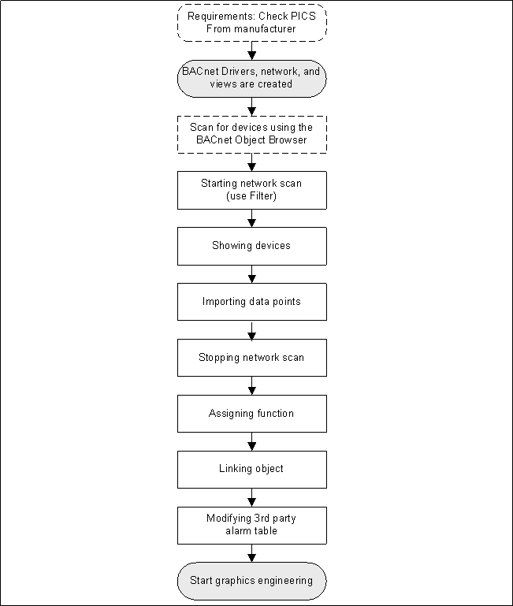

Workflow Online Engineering
The Discovery function scans the entire BACnet network for BACnet devices. We recommend using available filter criteria for the scan to avoid unnecessarily impairing the network.

Restrictions
The following restrictions apply when using online import with Discovery:
- Only standard BACnet objects are supported. Proprietary object and object extensions are lost.
- The objects are displayed alphabetically in System Browser.
Scan for Devices
The BACnet Object Browser scans a BACnet network for devices and their status.
- The PICS from the respective manufacturer support the required devices and objects.
- The network and driver are created and active.
NOTE: Logging on to Desigo CC is not necessary in this case.
- Open the Windows Start menu and select All Programs > [Vendor name] > Desigo CC> Tools > BACnet Browser.
- The BACnet Object Browser scans the network for BACnet devices.
NOTE: If multiple networks have been defined, they are not displayed using the defined network names. The designation in the BACnet Object Browser is System1_1, System1_2, System1_3, and so on. - Select a device from the system tree in the left pane.
- The right pane is updated with all associated information on the device, sorted by property name and value column.
- For subsequent Discovery (application of a filter), note the following data:
- vendor-identifier
- object-identifier
- The device data for the online import into Desigo CC are established.
No Communication is Available | |
Possible Causes | Proceed as Follows... |
Management platform is located on the same network:
|
|
BACnet driver not working. |
|
Start a Network Scan
- You have completed the optional Scan for devices workflow and the information needed to filter is available.
- The PICS from the respective manufacturer support the required devices and objects.
- Select Project > Field Networks > [Network name] and click the Discovery tab.
- Open the Hierarchies Mapping expander.
- In System Browser, select the logical hierarchy and drag the top node to the column Import this hierarchy under this node.
- Click Save
 .
. - Open the Discovery Settings expander.
- In the Scan timeout in seconds field, set the maximum time for scanning devices (Default: 60 seconds).
NOTE: If Enable devices auto-discovery is checked, the scanned devices are immediately imported to the project database. Use Scanning for Devices instead to avoid importing devices. - Select the filter criterion:
- Use network filter and enter the Network number filter.
- Use instance filter and enter the Beginning instance and Ending instance (object-identifier).
- Use vendor filter and enter a Vendor ID, see the table below.
- Click Save.
- Click Scan.
- As devices are discovered, they display in the Device Discovery expander of the Network Scan section.
Vendor ID
List of Some Vendor IDs | |||||
ID | Vendor | ID | Vendor | ID | Vendor |
0 | ASHRAE | 23 | York Controls Group | 313 | Siemens Energy & Automation, Inc. |
2 | The Trane Company | 39 | Kieback & Peter GmbH & Co KG | 314 | ETM Professional Control GmbH |
5 | Johnson Controls, Inc. | 73 | ABB Gebäudetechnik AG Bereich NetServ | 329 | TROX GmbH |
7 | Siemens Switzerland Ltd (formerly: Landis & Staefa Division Europe) | 74 | KNX Association cvba | 335 | Schneider Electric |
9 | Siemens Switzerland Ltd | 80 | Fr. Sauter AG | 387 | Securiton AG |
10 | Schneider Electric | 189 | Schneider Toshiba Inverter Europe | 450 | Hitachi Ltd. |
11 | TAC | 190 | Danfoss Drives A/S | 747 | Fraport AG |
17 | Honeywell Inc. | 222 | WAGO Kontakttechnik GmbH & Co. KG |
|
|
19 | TAC AB | 226 | Phoenix Contact GmbH & Co. KG |
|
|
20 | Hewlett-Packard Company | 227 | Grundfos Management A/S |
|
|
22 | Siemens Switzerland Ltd (formerly: Cerberus AG) | 312 | Honeywell Security Deutschland, Novar GmbH |
|
|
- The vendor ID list is available at: http://www.bacnet.org/VendorID/.
- The vendor ID list is mapped in the library TxG_BACnetVendorId.

NOTE:
Some suppliers, such as Siemens Ltd., have multiple Vendor IDs.
Import Data Points
- The Discovery tab is selected.
- The devices are listed in the Device Discovery expander of the Network Scan section.
- Select a device.
- Click Objects.
- All data points of that device are listed.
- Select the data points you want to import.
- Click Save.
- Click Back.
- Repeat steps 1 to 3 for each device you want to import.
- Click Import.
- The progress displays in the Discovery Status section.
- The data points display in System Browser below the selected network.
Assign/Change a Function
- Select Project > Field Networks > [Network] > Hardware > [Device name] > [Data point].
- Click the Object Configurator tab.
- Open the Main expander.
- In the Function drop-down list, select the corresponding function.
- Click Save.
- Repeat steps 1 to 5 for each additional data point.
Link Objects
The Discovery function imports data points to the Management View. They must be manually linked for the data points to also be available in the Logical View or User View. The following workflows use the Logical View as an example but they also apply to any other view.
Create a Hierarchy Structure
- The Logical View or User View is available.
- In System Browser, select Logical View.
- Select Logical.
- Select the Views tab.
- Select the root folder.
- Click Add Aggregator and select an object hierarchy (property, building, floor, room element).
a. In the New Object dialog box, enter a name and description.
b. Click OK. - Repeat the process to create the required hierarchy structure.
- Click Save.
Create Related Items
- The hierarchy structure is created in the Logical View.
- In System Browser, select the Logical View.
- Select the Manual Navigation check box.
- The workspace is fixed. The view does not change when selecting the data points.
- In System Browser, select Management View.
- The System Browser is in Management View and the Views workspace displays the Logical View.
- In the Views workspace, open the corresponding hierarchy.
- In System Browser, select the object and drag it to the appropriate hierarchy of the Views workspace.
- Repeat steps 4 to 5 to create additional related items.
- Click Save.
- The objects are linked to the Logical View and can be viewed in System Browser.